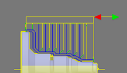
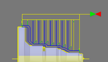

Ne pas se positionner à l'origine
Se positionner à l'origine au début
La position d'origine est une valeur Z connue définie par rapport au système de coordonnées et paramétrée dans la section Système de coordonnées (WCS) dans l'onglet Configuration de la boîte de dialogue Stratégie de configuration.
Vous pouvez forcer l'outil à se déplacer vers la position d'origine avant de commencer l'opération ou une fois l'opération terminée. L'outil retirera toujours du brut sur l'axe X jusqu'à atteindre la hauteur de dégagement, puis se positionnera au niveau de la position d'origine sur l'axe Z.
|
|
Ne pas se positionner à l'origine |
Se positionner à l'origine au début |
 |
 |
Se positionner à l'origine à la fin |
Se positionner à l'origine au début et à la fin |
Remarque: la position d'origine mentionnée ici ne correspond pas à la position d'origine G28 ou G53 définie dans la boîte de dialogue Post-processeur avec certains poteaux. La définition des deux valeurs simultanément peut entraîner des résultats inattendus si vous ne connaissez pas bien votre post-processeur et votre machine.